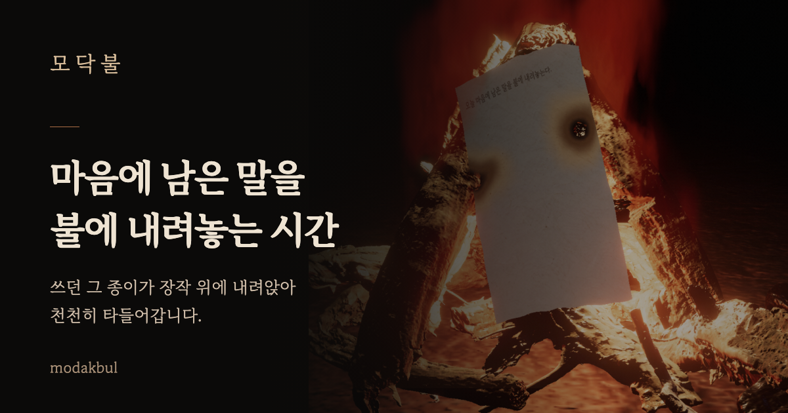

모 닥 불

혼자 조용히 불을 바라보는 시간. 마음에 남은 말을 종이에 적어보세요. 쓰던 그 종이가 장작 위에 내려앉아 나무 모양을 따라 휘고, 불길이 번지며 천천히 사라집니다.
불만 바라보고 싶을 때
불멍모드를 켜면 화면의 글과 버튼을 걷어내고 모닥불만 볼 수 있어요. 가로 화면과 태블릿에서도 불을 바라볼 수 있습니다.
좋았던 순간은 곁에
기억을 폴라로이드로 남기고 사진이나 손그림을 붙여보세요. 마음에 드는 세 장은 불가에 걸어둘 수 있습니다.
나누고 싶을 때만
앱 링크를 미리보기 카드로 공유하거나, 내 모닥불을 사진으로 만들어 나눌 수 있어요. 남겨둔 기억도 내가 선택할 때만 카드로 공유됩니다.
계정과 광고는 없습니다. 태운 글은 남기지 않고, 남겨둔 기록은 이 기기에 저장됩니다. 직접 공유하기를 고른 경우에만 선택한 앱으로 링크나 이미지가 전달됩니다. 인터넷이 없어도 주요 기능을 사용할 수 있으며, 새 버전은 앱 안에서 조용히 안내합니다.